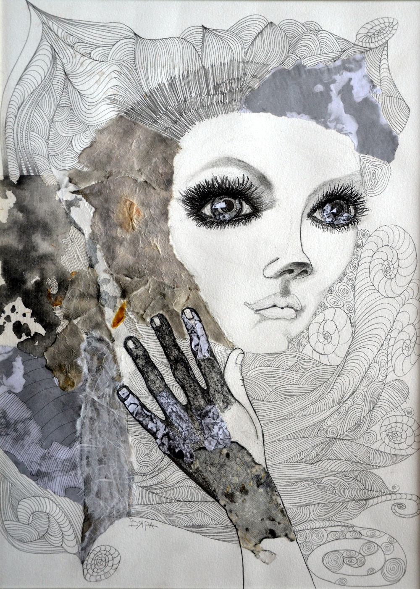

Juvenility

by Vyara Tichkova, Bulgaria, 2017
Drawing, Pencil, Unframed
Size 41 x 56 cm
Shipping : Worldwide
Free Shipping.
$700
Purchase
About the Artist:-
Degree education in 'National High School of Performing and Screen Arts' Plovdiv,Bulgaria
Master degree 'Scenography' with professional qualification 'Artist' in 'National Academy of Art' Sofia,Bulgaria
I get inspiration from everything around me. It's can be a song, an emotion, a book, a song, a story from my friend, it's unpredictable what can touch my soul... I'm amazed how much abstraction have in the nature in the simple thinks and in elementary pictures of everyday life. My passion is to traveling around the world, every new journey gives me a fresh opportunity to develop and change my vision and ideas. I see new cultures, learn curious stories and stand in front of amazing natural views, I meet the achievements of man in everyone aspect. That take my breath and poses new challenges to me as an artist. I would not want to explain my artworks because I believe that the works of art are the connection between the artist and the viewer. This is another level of communication, another kind of language that does not need words ...
About the Artwork:-
Abstract Pencil Drawing. Deep contrast.